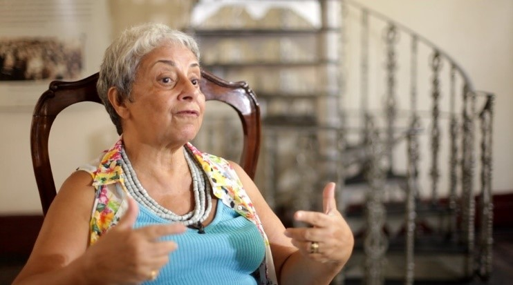
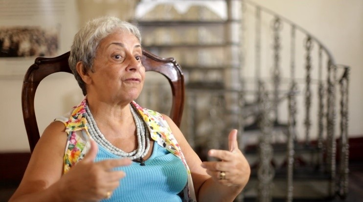

Conheça alguns passos já realizados...
Essência Cristã
Esse projeto será realizado de maneira simples, porém profunda. Alcançar as luzes da história que Yvonne Pereira deixou. Somente as luzes, histórias interessantes que toque o coração do público.
Deverá ser desinteressado, sem grandes pretensões estéticas ou comerciais que desequilibrem a vibração do conteúdo a ser construído. Acima de tudo, um conteúdo que expresse a verdade cristã expressada na vida da médium.
O objetivo primordial é para que a essência do conteúdo oportunize a transformação interior de todos os envolvidos na produção e dos espectadores.
 
